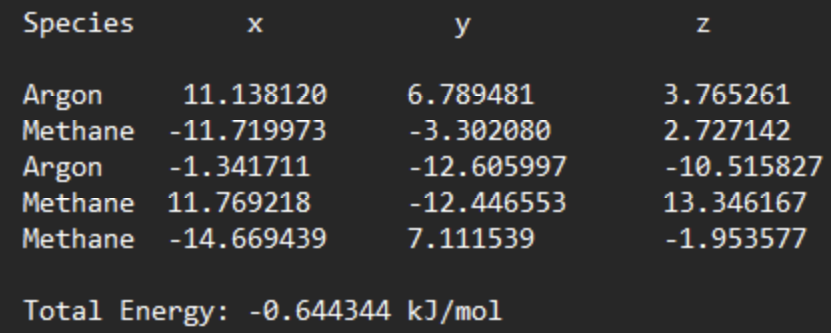

Key Visuals

Lennard-Jones Potential
Characteristic LJ curve showing equilibrium distance at the minimum.

Output File
Program neatly presents results of displacement into a an Output File.

Dynamic Trajectories
How particles move and cluster under attractive & repulsive forces.